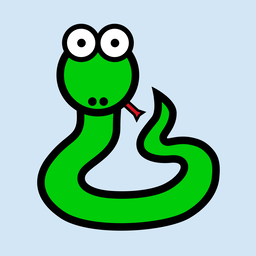

Personalizar ícones¶
A aplicação que desenvolvemos no tutorial principal tem usado um ícone predefinido da "abelha cinzenta". Vamos personalizar esta aplicação ao configura-lo para usar o seu próprio ícone.
Nota
No BeeWare, o termo ícone pode referir duas coisas diferentes:
-
Ícone da aplicação - A imagem que representa a sua aplicação na área de trabalho, na barra, ou ecrã inicial.
-
Ícones de tempo de execução - Imagens usadas na interface da sua aplicação (por exemplo, em botões ou tabelas).
Adicionar um ícone¶
Cada plataforma usa um formato diferente para os ícones das aplicações - e algumas plataformas precisam de vários ícones em diferentes tamanhos e formas. Para ter isso em conta, o Briefcase oferece uma maneira abreviada de configurar um ícone uma vez e, depois expandir essa definição para todos os diferentes ícones necessários para cada plataforma individual.
Edite o seu pyproject.toml, adicionando um novo item de configuração icon na secção de configuração [tool.briefcase.app.helloworld], logo acima da definição sources:
icon = "icons/helloworld"
Esta definição de ícone não especifica nenhuma extensão de ficheiro. O valor será usado como um prefixo; cada plataforma acrescentará itens adicionais a esse prefixo para criar os ficheiros necessários para cada plataforma. Algumas plataformas exigem múltiplos ficheiros de ícones; esse prefixo será combinado com o tamanho do ficheiro e modificadores de variantes para gerar a lista de ficheiros de ícones que são usados.
Agora podemos executar o briefcase update novamente - mas desta vez, passamos a bandeira --update-resources, que informa o Briefcase que queremos instalar novos recursos da aplicação (ou seja, os ícones):
(beeware-venv) $ briefcase update --update-resources
[helloworld] Atualizar o código da aplicação...
A instalar src/helloworld... concluído
[helloworld] Atualizar recursos da aplicação...
Não foi possível encontrar icons/helloworld.icns para o ícone da aplicação; a usar a predefinição
[helloworld] Remover conteúdo desnecessário da aplicação...
A removendo conteúdo desnecessário do pacote da aplicação... concluído
[helloworld] Aplicação atualizada.
(beeware-venv) $ briefcase update --update-resources
[helloworld] A atualizar o código da aplicação...
A instalar src/helloworld... concluído
[helloworld] A atualizar os recursos da aplicação...
Não foi possível encontrar icons/helloworld-16.png para o ícone da aplicação de 16 px; a usar a predefinição
Não foi possível encontrar icons/helloworld-32.png para o ícone da aplicação de 32px; a usar a predefinição
Não foi possível encontrar icons/helloworld-64.png para o ícone da aplicação de 64px; a usar a predefinição
Não foi possível encontrar icons/helloworld-128.png para o ícone da aplicação de 128px; a usar a predefinição
Não foi possível encontrar icons/helloworld-256.png para o ícone da aplicação de 256 px; a usar a predefinição
Não foi possível encontrar icons/helloworld-512.png para o ícone da aplicação de 512 px; a usar a predefinição
[helloworld] A remover conteúdo desnecessário da aplicação...
A remover conteúdo desnecessário do pacote da aplicação... concluído
[helloworld] Aplicação atualizada.
(beeware-venv) C:\...>briefcase update --update-resources
[helloworld] A atualizar o código da aplicação...
A instalar src/helloworld... concluído
[helloworld] A atualizar recursos da aplicação...
Não foi possível encontrar icons/helloworld.ico para o ícone da aplicação; a usar a predefinição
[helloworld] A remover conteúdo desnecessário da aplicação...
A remover conteúdo desnecessário do pacote da aplicação... concluído
[helloworld] Aplicação atualizada.
(beeware-venv) $ briefcase update android --update-resources
[helloworld] A atualizar o código da aplicação...
A instalar src/helloworld... concluído
[helloworld] A atualizar os recursos da aplicação...
Não foi possível encontrar icons/helloworld-round-48.png para o ícone redondo da aplicação de 48 px; a usar a predefinição
Não foi possível encontrar icons/helloworld-round-72.png para o ícone redondo de 72px da aplicação; a usar a predefinição
Não foi possível encontrar icons/helloworld-round-96.png para o ícone redondo de 96px da aplicação; a usar a predefinição
Não foi possível encontrar icons/helloworld-round-144.png para o ícone redondo de 144px da aplicação; a usar a predefinição
Não foi possível encontrar icons/helloworld-round-192.png para o ícone redondo da aplicação de 192px; a usar a predefinição
Não foi possível encontrar icons/helloworld-square-48.png para o ícone quadrado da aplicação de 48px; a usar a predefinição
Não foi possível encontrar icons/helloworld-square-72.png para o ícone quadrado da aplicação de 72px; a usar a predefinição
Não foi possível encontrar icons/helloworld-square-96.png para o ícone quadrado da aplicação de 96px; a usar a predefinição
Não foi possível encontrar icons/helloworld-square-144.png para o ícone quadrado da aplicação de 144px; a usar a predefinição
Não foi possível encontrar icons/helloworld-square-192.png para o ícone quadrado da aplicação de 192px; a usar a predefinição
Não foi possível encontrar icons/helloworld-square-320.png para o ícone quadrado da aplicação de 320 px; a usar a predefinição
Não foi possível encontrar icons/helloworld-square-480.png para o ícone quadrado da aplicação de 480 px; a usar a predefinição
Não foi possível encontrar icons/helloworld-square-640.png para o ícone quadrado da aplicação de 640 px; a usar a predefinição
Não foi possível encontrar icons/helloworld-square-960.png para o ícone de aplicação quadrado de 960 px; a usar a predefinição
Não foi possível encontrar icons/helloworld-square-1280.png para o ícone de aplicação quadrado de 1280 px; a usar a predefinição
Não foi possível encontrar icons/helloworld-adaptive-108.png para o ícone de aplicação adaptável de 108 px; a usar a predefinição
Não foi possível encontrar icons/helloworld-adaptive-162.png para o ícone adaptável da aplicação de 162 px; a usar a predefinição
Não foi possível encontrar icons/helloworld-adaptive-216.png para o ícone adaptável da aplicação de 216 px; a usar a predefinição
Não foi possível encontrar icons/helloworld-adaptive-324.png para o ícone adaptável da aplicação de 324 px; a usar a predefinição
Não foi possível encontrar icons/helloworld-adaptive-432.png para o ícone adaptável da aplicação de 432 px; a usar a predefinição
[helloworld] A remover conteúdo desnecessário da aplicação...
A remover conteúdo desnecessário do pacote da aplicação... concluído
[helloworld] Aplicação atualizada.
(beeware-venv) $ briefcase iOS --update-resources
[helloworld] A atualizar o código da aplicação...
A instalar src/helloworld... concluído
[helloworld] A atualizar os recursos da aplicação...
Não foi possível encontrar icons/helloworld-20.png para o ícone da aplicação de 20px; a usar a predefinição
Não foi possível encontrar icons/helloworld-29.png para o ícone da aplicação de 29px; a usar a predefinição
Não foi possível encontrar icons/helloworld-40.png para o ícone da aplicação de 40px; a usar a predefinição
Não foi possível encontrar icons/helloworld-58.png para o ícone da aplicação de 58px; a usar a predefinição
Não foi possível encontrar icons/helloworld-60.png para o ícone da aplicação de 60px; a usar a predefinição
Não foi possível encontrar icons/helloworld-76.png para o ícone da aplicação de 76px; a usar a predefinição
Não foi possível encontrar icons/helloworld-80.png para o ícone da aplicação de 80px; a usar a predefinição
Não foi possível encontrar icons/helloworld-87.png para o ícone da aplicação de 87px; a usar a predefinição
Não foi possível encontrar icons/helloworld-120.png para o ícone da aplicação de 120px; a usar a predefinição
Não foi possível encontrar icons/helloworld-152.png para o ícone da aplicação de 152 px; a usar a predefinição
Não foi possível encontrar icons/helloworld-167.png para o ícone da aplicação de 167 px; a usar a predefinição
Não foi possível encontrar icons/helloworld-180.png para o ícone da aplicação de 180 px; a usar a predefinição
Não foi possível encontrar icons/helloworld-640.png para o ícone da aplicação de 640px; a usar a predefinição
Não foi possível encontrar icons/helloworld-1024.png para o ícone da aplicação de 1024px; a usar a predefinição
Não foi possível encontrar icons/helloworld-1280.png para o ícone da aplicação de 1280px; a usar a predefinição
Não foi possível encontrar icons/helloworld-1920.png para o ícone da aplicação de 1920px; a usar a predefinição
[helloworld] A remover conteúdo desnecessário da aplicação...
A remover conteúdo desnecessário do pacote da aplicação... concluído
[helloworld] Aplicação atualizada.
Isto reporta o ficheiro (ou ficheiros) de ícone específico que o Briefcase está a esperar. No entanto, como não fornecemos os ficheiros de ícone reais, a instalação falha e o Briefcase retorna ao valor predefinido (o mesmo ícone de "abelha cinzenta").
Vamos fornecer alguns ícones reais. Descarregue este arquivo icons.zip e descompacte-o no diretório raiz do seu projeto. Após a descompactação, o seu diretório de projeto deverá ficar algo como isto:
beeware-tutorial/
├── beeware-venv/
│ └── ...
└── helloworld/
├── ...
├── icons/
│ ├── helloworld.icns
│ ├── helloworld.ico
│ ├── helloworld.png
│ ├── helloworld-16.png
│ └──...
├── src/
│ └── ...
└── pyproject.toml
Há muitos ícones nesta pasta, mas a maioria deles deve ter a mesma aparência: uma cobra verde num fundo azul claro:

A única exceção serão os ícones com -adaptive- no seu nome; estes têm um fundo transparente. Isto representa todos os diferentes tamanhos e formas de ícones necessários que precisa para suportar uma aplicação em todas as plataformas suportadas pelo Briefcase.
Agora que temos os ícones, podemos atualizar a aplicação novamente. No entanto, o briefcase update apenas vai copiar os recursos atualizados para o diretório de compilação; também queremos reconstruir a aplicação para garantir que o novo ícone seja incluído, e depois iniciar a aplicação. Podemos encurtar esse processo passando --update-resources na nossa chamada para run - isto vai atualizar a aplicação, atualizar os recursos da aplicação, e depois iniciar a aplicação:
(beeware-venv) $ briefcase run --update-resources
[helloworld] A atualizar o código da aplicação...
A instalar src/helloworld... concluído
[helloworld] A atualizar os recursos da aplicação...
A instalar icons/helloworld.icns como ícone da aplicação... concluído
[helloworld] A remover conteúdo desnecessário da aplicação...
A remover conteúdo desnecessário do pacote da aplicação... concluído
[helloworld] Aplicação atualizada.
[helloworld] A assinar a aplicação ad-hoc...
━━━━━━━━━━━━━━━━━━━━━━━━━━━━━━━━━━━━━━━━━━━━━━━━━━ 100,0% • 00:01
[helloworld] A compilar build/helloworld/macos/app/Hello World.app
[helloworld] A iniciar a aplicação...
(beeware-venv) $ briefcase run --update-resources
[helloworld] A atualizar o código da aplicação...
A instalar src/helloworld... concluído
[helloworld] A atualizar os recursos da aplicação...
A instalar icons/helloworld-16.png como ícone da aplicação de 16 px... concluído
A instalar icons/helloworld-32.png como ícone da aplicação de 32px... concluído
A instalar icons/helloworld-64.png como ícone da aplicação de 64px... concluído
A instalar icons/helloworld-128.png como ícone da aplicação de 128px... concluído
A instalar icons/helloworld-256.png como ícone da aplicação de 256px... concluído
A instalar icons/helloworld-512.png como ícone da aplicação de 512px... concluído
[helloworld] A remover conteúdo desnecessário da aplicação...
A remover conteúdo desnecessário do pacote da aplicação... concluído
[helloworld] Aplicação atualizada.
[helloworld] A compilar a aplicação...
A compilar o binário bootstrap...
...
[helloworld] A compilar build/helloworld/linux/ubuntu/jammy/helloworld-0.0.1/usr/bin/helloworld
[helloworld] A iniciar a aplicação...
(beeware-venv) C:\...>briefcase build --update-resources
[helloworld] A atualizar o código da aplicação...
A instalar src/helloworld... concluído
[helloworld] A atualizar os recursos da aplicação...
A instalar icons/helloworld.ico como ícone da aplicação... concluído
[helloworld] A remover conteúdo desnecessário da aplicação...
A remover conteúdo desnecessário do pacote da aplicação... concluído
[helloworld] Aplicação atualizada.
[helloworld] A compilar a aplicação...
A remover todas as assinaturas digitais da aplicação stub... concluído
A configurar detalhes da aplicação stub... concluído
[helloworld] A compilar build\helloworld\windows\app\src\Hello World.exe
[helloworld] A iniciar a aplicação...
(beeware-venv) $ briefcase build android --update-resources
[helloworld] A atualizar o código da aplicação...
A instalar src/helloworld... concluído
[helloworld] A atualizar os recursos da aplicação...
A instalar icons/helloworld-round-48.png como ícone redondo da aplicação de 48 px... concluído
A instalar icons/helloworld-round-72.png como ícone redondo de 72px da aplicação... concluído
A instalar icons/helloworld-round-96.png como ícone redondo de 96px da aplicação... concluído
A instalar icons/helloworld-round-144.png como ícone redondo de 144px da aplicação... concluído
A instalar icons/helloworld-round-192.png como ícone redondo de 192px para a aplicação... concluído
A instalar icons/helloworld-square-48.png como ícone quadrado de 48px para a aplicação... concluído
A instalar icons/helloworld-square-72.png como ícone quadrado de 72px para a aplicação... concluído
A instalar icons/helloworld-square-96.png como ícone de aplicação quadrado de 96px... concluído
A instalar icons/helloworld-square-144.png como ícone de aplicação quadrado de 144px... concluído
A instalar icons/helloworld-square-192.png como ícone de aplicação quadrado de 192px... concluído
A instalar icons/helloworld-square-320.png como ícone de aplicação quadrado de 320 px... concluído
A instalar icons/helloworld-square-480.png como ícone de aplicação quadrado de 480 px... concluído
A instalar icons/helloworld-square-640.png como ícone de aplicação quadrado de 640 px... concluído
A instalar icons/helloworld-square-960.png como ícone de aplicação quadrado de 960 px... concluído
A instalar icons/helloworld-square-1280.png como ícone de aplicação quadrado de 1280 px... concluído
A instalar icons/helloworld-adaptive-108.png como ícone de aplicação adaptável de 108 px... concluído
A instalar icons/helloworld-adaptive-162.png como ícone de aplicação adaptável de 162 px... concluído
A instalar icons/helloworld-adaptive-216.png como ícone de aplicação adaptável de 216 px... concluído
A instalar icons/helloworld-adaptive-324.png como ícone de aplicação adaptável de 324 px... concluído
A instalar icons/helloworld-adaptive-432.png como ícone adaptável da aplicação de 432px... concluído
[helloworld] A remover conteúdo desnecessário da aplicação...
A remover conteúdo desnecessário do pacote da aplicação... concluído
[helloworld] Aplicação atualizada.
[helloworld] A iniciar a aplicação...
Nota
Se estiver a usar uma versão recente do Android, pode notar que o ícone da aplicação foi alterado para uma cobra verde, mas o fundo do ícone é branco, em vez de azul claro. Vamos corrigir isso no próximo passo.
(beeware-venv) $ briefcase build iOS --update-resources
[helloworld] A atualizar o código da aplicação...
A instalar src/helloworld... concluído
[helloworld] A atualizar os recursos da aplicação...
A instalar icons/helloworld-20.png como ícone da aplicação de 20px... concluído
A instalar icons/helloworld-29.png como ícone da aplicação de 29px... concluído
A instalar icons/helloworld-40.png como ícone da aplicação de 40px... concluído
A instalar icons/helloworld-58.png como ícone da aplicação de 58px... concluído
A instalar icons/helloworld-60.png como ícone da aplicação de 60px... concluído
A instalar icons/helloworld-76.png como ícone da aplicação de 76px... concluído
A instalar icons/helloworld-80.png como ícone de aplicação de 80px... concluído
A instalar icons/helloworld-87.png como ícone de aplicação de 87px... concluído
A instalar icons/helloworld-120.png como ícone de aplicação de 120px... concluído
A instalar icons/helloworld-152.png como ícone de aplicação de 152px... concluído
A instalar icons/helloworld-167.png como ícone de aplicação de 167px... concluído
A instalar icons/helloworld-180.png como ícone de aplicação de 180px... concluído
A instalar icons/helloworld-640.png como ícone da aplicação de 640px... concluído
A instalar icons/helloworld-1024.png como ícone da aplicação de 1024px... concluído
A instalar icons/helloworld-1280.png como ícone da aplicação de 1280px... concluído
A instalar icons/helloworld-1920.png como ícone da aplicação de 1920px... concluído
[helloworld] A remover conteúdo desnecessário da aplicação...
A remover conteúdo desnecessário do pacote da aplicação... concluído
[helloworld] Aplicação atualizada.
[helloworld] A iniciar a aplicação...
Nota
Se obter um rastreio de pilha referenciando faker ou httpx ao executar a aplicação, é possível que não tenha executado a aplicação durante as etapas 7 ou 8 do tutorial. Execute a aplicação novamente, adicionando o argumento -r para atualizar os requisitos da aplicação.
Ao executar a aplicação no iOS ou Android, além da alteração do ícone, também deve notar que o ecrã inicial incorpora o novo ícone. No entanto, o fundo azul claro do ícone parece um pouco deslocado em relação ao fundo branco do ecrã inicial. Podemos corrigir isso personalizando a cor de fundo do ecrã inicial. Adicione a seguinte definição ao seu pyproject.toml, logo após a definição icon:
splash_background_color = "#D3E6F5"
Infelizmente, o Briefcase não é capaz de aplicar essa alteração a um projeto já gerado, pois isso requer modificações num dos ficheiros que foi gerado durante a chamada original do briefcase create. Para aplicar essa alteração, temos que recriar a aplicação executando novamente o briefcase create. Quando fazemos isso, somos solicitados a confirmar que queremos substituir o projeto existente:
(beeware-venv) $ briefcase create
A aplicação 'helloworld' já existe; deseja sobrescrever [y/N]? y
[helloworld] A remover o pacote da aplicação antiga...
[helloworld] A gerar o modelo da aplicação...
...
[helloworld] Criado build/helloworld/macos/app
(beeware-venv) $ briefcase create
A aplicação 'helloworld' já existe; deseja sobrescrever [y/N]? y
[helloworld] A remover o pacote da aplicação antiga...
[helloworld] A gerar o modelo da aplicação...
...
[helloworld] Criado build/helloworld/linux/ubuntu/jammy
(beeware-venv) C:\...>briefcase create
A aplicação 'helloworld' já existe; deseja sobrescrever [y/N]? y
[helloworld] A remover o pacote da aplicação antiga...
[helloworld] A gerar modelo de aplicação...
...
[helloworld] Criado build\helloworld\windows\app
(beeware-venv) $ briefcase create android
A aplicação 'helloworld' já existe; deseja sobrescrever [y/N]? y
[helloworld] A remover o pacote da aplicação antiga...
[helloworld] A gerar modelo de aplicação...
...
[helloworld] Criado build/helloworld/android/gradle
(beeware-venv) $ briefcase create iOS
A aplicação 'helloworld' já existe; deseja sobrescrever [y/N]? y
[helloworld] A remover o pacote da aplicação antiga...
[helloworld] A gerar o modelo da aplicação...
...
[helloworld] Criado build/helloworld/ios/xcode
Depois pode recompilar e executar novamente a aplicação usando o briefcase run. Não vai notar nenhuma alteração na aplicação para ambiente de trabalho, mas as aplicações para Android ou iOS agora devem ter um fundo de ecrã inicial azul claro.
Vai precisar de recriar a aplicação dessa forma sempre que fizer uma alteração no seu pyproject.toml que não esteja relacionada ao código-fonte ou às dependências. Qualquer alteração em descrições, números de versão, cores ou permissões vai exigir um passo de recriação. Por este motivo, enquanto estiver a desenvolver o projeto, não deve fazer nenhuma alteração manual no conteúdo da pasta build e não deve adicionar a pasta build ao seu sistema de controle de versão. A pasta build deve ser considerada totalmente efémera - um resultado do sistema de compilação que pode ser recriada quando necessário para refletir a configuração atual do seu projeto.
Adicionar um ícone de tempo de execução¶
Quando se trata de adicionar um ícone à interface da aplicação, esse tipo de ícone deve ser armazenado num diretório separado dos ícones da aplicação. Clique com o botão direito do rato em 'Tibério o iaque', salve a imagem num ficheiro .png e nomeie-a helloworld. O ficheiro deve ser salvo na pasta icons/ do pacote de código-fonte da aplicação.
O seu diretório vai ficar parecido com o seguinte:
beeware-tutorial/
├── beeware-venv/
│ └── ...
└── helloworld/
├── ...
├── icons/
│ ├── helloworld.icns
│ ├── helloworld.ico
│ ├── helloworld.png
│ ├── helloworld-16.png
│ └──...
├── src/
│ ├── helloworld
│ │ └── icons/
│ │ └── helloworld.png
│ └──...
└── pyproject.toml
Agora que o ícone de tempo de execução está no lugar, vamos adicionar um ícone ao nosso botão. O widget do botão Toga só acomoda um ícone ou texto (não ambos), portanto vamos atualizar o código do botão para incluir o ícone de tempo de execução.
helloworld_icon = toga.Icon("icons/helloworld")
button = toga.Button(
icon=helloworld_icon,
on_press=self.say_hello,
margin=5,
)
Como os ícones de tempo de execução são recursos de aplicação incluídos no pacote Python, não é necessário reconstruir ou atualizar o recurso. Neste ponto pode executar o briefcase dev (ou briefcase run) para ver o ícone adicionado ao botão.